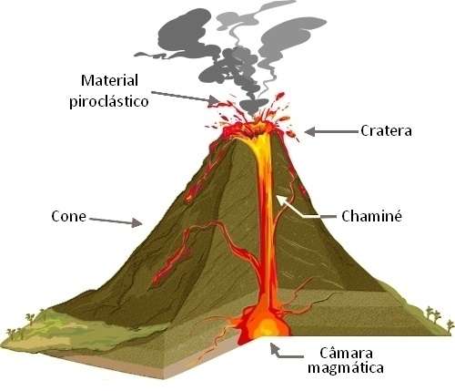
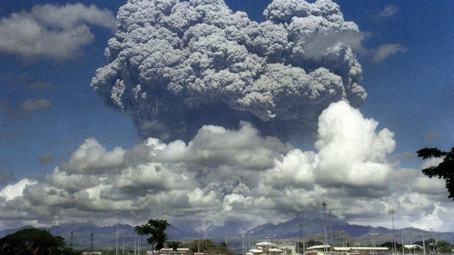

Vulcão é uma abertura na crosta terrestre (camada superficial da Terra) por onde são expelidos para a superfície materiais originários do manto. Estes materiais, em geral, surgem em estado líquido-pastoso e incandescente recebem o nome de magma. É um material presente na camada imediatamente abaixo da crosta terrestre – o manto. No entanto, da fenda do vulcão, também podem ser emitidos materiais gasosos, poeira e rochas em estado sólido.
 